- Which statement is true for latching current ?
Latching current is the minimum required anode current to turn on SCR.
- If holding current of a thyristor is 2 mA then latching current should be
Generally latching current is 2 or 3 times of holding current.
- In reverse blocking mode of a thyristor
In reverse blocking mode J1 and J2 is in reverse bias and J2 is in forward bias.
- In forward blocking mode of a thyristor
In forward blocking mode junction J2 acts in reverse bias whereas J1 and J3 acts in forward bias.
- Leakage current flows through the thyristor in
In forward blocking mode junction J2 and in reverse blocking mode junction J1 and J3 acts as a capacitor hence leakage current present in both mode.
- Which triggering is the most reliable?
Gate triggering process is the most reliable as junction temperature does not rise to high value in this process.
- Light triggering mainly used in
Light triggering combined with gate triggering mainly used in HVDC as this combination is very powerful triggering process.
- In a P1N1P2N2 thyristor which layer is less doped ?
H2 → Highly doped
P2 → Less highly doped
N1 → Less doped
P1 → Same as P2 - If a latching current for the circuit shown in figure is 2 mA. Obtain the value of min width of the property turn ON the SCR?
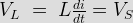
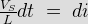
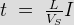
Ia = IL=2 mA
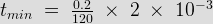
= 3.3 μs - Let of a thyristor Vc1, Vc2, Vc3 are forward break over voltage for gate current Ig1, Ig2, Ig3 respectively. Then
- SCR will be turned off when anode current is
When anode current is in between holding current and latching current then SCR is off only if gate signal is absent. When anode current is below holding current then it is properly turned off.
- After proper turn on of thyristor
After proper turn on of thyristor gate signal must be removed to reduce the loss in gate circuit.
- Gate circuit or triggering circuit of a thyristor is
Thyristor circuit is high power circuit. But its triggering circuit is low power circuit.
- A thyristor will be triggered when Vg = 1.5 volt and Ig = 100 mA in the given figure. Calculate the value of R in Ω is
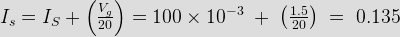
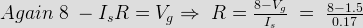
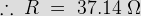 - For an SCR gate – cathode characteristic is a straight line of 130. For triggered source volume of 15 V and allowable gate power dissipation of 0.5 W compute the gate source resistance?
Vg / Ig = 130.
Eg = 15 V
P = 0.5 W = VgIg
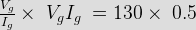
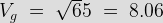
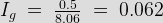
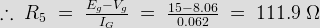 - Latching current for an SCR inserted between a dc voltage source of 200 V and load is 100 mA. Compute the minimum rate of width pulse required to turn ON the SCR in case load consists of R = 20 Ω in series with L = 0.2 H.
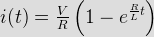
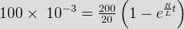
So, minimum width of pulse is 100 μs. - The latching current of SCR is 20 mA. Its holding current will be
As holding current is always less than leaking current.
- Thyristor can be protected from over voltages by using
Non linear or voltage clamping device is used to protect thyristors under surge conditions by providing low impedance path.
- Example of a voltage clamping device
Varistor is a non - linear resistor which is used as voltage clamping device.
- Under over voltage condition impedance offered by the voltage clamping device is
Voltage clamping device under surge condition provides low impedance path to protect SCR.
Design with  by SARU TECH
by SARU TECH
www.sarutech.com
Content Credited to electrical4u.com
Online Electrical Engineering Study Site